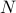
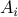
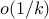
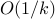

Submitted
This paper introduces a parallel and distributed extension to the alternating direction method of multipliers (ADMM) for solving convex problem:
The algorithm decomposes the original problem into  smaller subproblems and solves them in parallel at each iteration. This Jacobian-type algorithm is well suited for distributed computing and is particularly attractive for solving certain large-scale problems. However, it has been shown that the Jacobian ADMM is not necessarily convergent.
This paper introduces a few novel results. Firstly, it shows that extending ADMM straightforwardly from the classic Gauss-Seidel setting to the Jacobian setting, from 2 blocks to blocks, will preserve convergence if matrices  are mutually near-orthogonal and have full column-rank. Secondly, for general matrices , this paper proposes to add proximal terms of different kinds to the subproblems so that the subproblems can be solved in flexible and efficient ways and the algorithm converges globally at a rate of . Thirdly, a simple technique is introduced to improve some existing convergence rates from  to .
In practice, some conditions in our convergence theorems are conservative. Therefore, we introduce a strategy for dynamically tuning the parameters in the algorithm, leading to substantial acceleration of the convergence in practice. Numerical results are presented to demonstrate the efficiency of the proposed method in comparison with several existing parallel algorithms.
We implemented our algorithm on Amazon EC2, an on-demand public computing cloud, and report its performance on very large-scale basis pursuit problems with distributed data.
Compile and Run
Makefile is included in the zip file. You may need to edit Makefile to ensure that the variable GSLROOT is set correctly. To compile, type:
make
To run, type:
mpirun -np 4 ./jacobiADMM
W. Deng, M.-J. Lai, Z. Peng, and W. Yin, Parallel Multi-Block ADMM with o(1/k) Convergence, UCLA CAM 13-64, 2013.
An early version of this paper has different authors and a different title:
W. Deng, M.-J. Lai, and W. Yin, On the o(1/k) Convergence and Parallelization of the Alternating Direction Method of Multipliers, UCLA CAM 13-64, 2013.